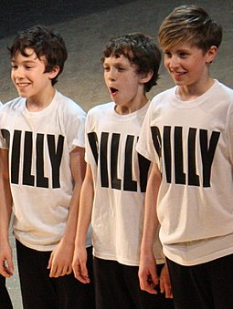

Thomas Stanley Holland was born on 1 June 1996 in the town of Kingston upon Thames, England to photographer Nicola (née Frost) and Dominic Holland, a comedian and author.He has three younger brothers.His paternal grandmother was from Tipperary, Ireland. Holland was educated at Donhead, a Catholic preparatory school in Wimbledon in South West London, followed by Wimbledon College, a voluntary aided Jesuit comprehensive school, up until December 2012. He was bullied in school for being a dancer. After Wimbledon College, he attended the BRIT School for Performing Arts and Technology in Croydon. In his late teens, during a lull in his career, Holland briefly attended carpentry school in Cardiff, Wales.
In September 2008, Holland (together with co-star Tanner Pflueger) gave his first TV interview, on the news programme on channel FIVE. The following 31 January, he was on the premiere of the ITV1 show The Feel Good Factor, during which he performed a version of "Angry Dance" from Billy Elliot the Musical, along with Pflueger and Layton Williams, two other actors who were playing the title role, and was interviewed by host Myleene Klass.
For the final The Feel Good Factor on 28 March 2009, he trained five British schoolboys for a dance routine.On 8 March 2010, to mark the fifth anniversary of Billy Elliot the Musical, Holland and three other current Billy Elliots were invited to 10 Downing Street to meet Prime Minister Gordon Brown. Holland was chosen to be a lead at the fifth-anniversary show on 31 March 2010. He rotated with three other performers in the title role of Billy Elliot the Musical until 29 May 2010.